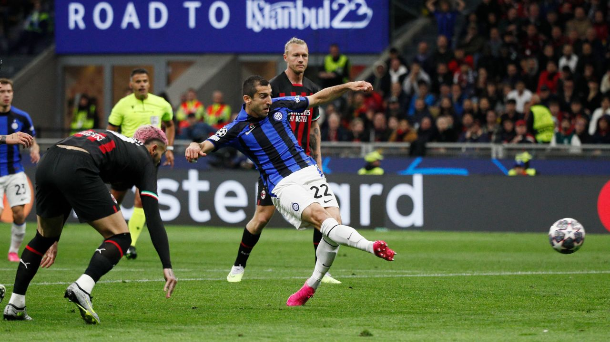

Milan utslagna i semifinalen mot Inter
Det krävdes för Rossoneri att vända och göra 2 tidiga mål för att det sammanlgada resultatet skulle vara 2-2. Milan fick många försök men lyckades inte helt med att nå Onana. Efter ett mål av Lautaro Martinez i den 63 minuten var det massa milan fans som lämnade stadion.